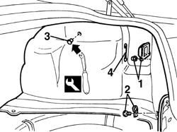
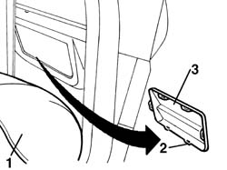

5010C60 lh or rh rear air outlet -one- r r
- Path
- Procedures > 50 AUXILIARY UNITS > 5010 CLIMATE CONTROL - MISCELLANEOUS > 5010C air outlet and diffusers > 5010C60 lh or rh rear air outlet -one- r r
- Kind
- repair procedure (removal / refitting; the operation number is the code)
- Applies to
- all engines; all production periods
- Interactive page
- https://sloeber94.github.io/elrnDB-a156/en/#/3238262
Applies to: all engines; all production periods
 Removing
Removing
 Refitting
Refitting7040B10 load platform (luggage platform) trim - r+r
7040B22 luggage compartment/load platform moulding - r+r
1. Remove the lights protection
2. Loose the ring screw
3. Supplan the retaining bottom with the proper tool
 | Name | Country |
|---|---|---|
3 | Scraper blade | 1.823.015.000 |
4. Take off the security tie rod fuel door opening

Applies to: all engines; all production periods
1. Remove the lateral covering
2. Supplant the retaining check springs of the hub
3. Supplant the hub by pushing at the exterior part and recover it from the interior

Applies to: all engines; all production periods
Refitting
RemovingVerify that the hub has no damages
Place the hub
Place the check sprnigs of the hub
Replace the lateral covering
Install the security tie rod fuel door opening in its seat
Place the retaining bottom
Tighten the ring screw
Install the light protection
Topics linked from this page (2)
- 7040B10 load platform (luggage platform) trim - r+r
- 7040B22 luggage compartment/load platform moulding - r+r